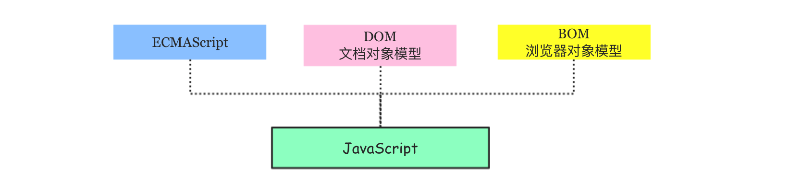

Node系列-Timeline
概述 JavaScript是一门动态、弱类型的解释型高级编程语言，它基于原型，支持面向对象和函数式编程等多种编程范式，通常简称为js。在世界上的绝大多数网站中都能看到JavaScript的身影，世界上所有的主流浏览器(Chrome、IE、Firefox、Safari、Opera)都支持它。
作者 Brendan Eich
背景 JavaScript诞生于1995年，其诞生的初衷是为了减轻服务器端的压力而在客户端提供一种表单验证的功能。最初命名为Mocha，1995年9月在Netscape Navigator 2.0的Beta版中改名为LiveScript，同年12月，Netscape Navigator 2.0 Beta 3中部署时被重命名为JavaScript，当时网景公司与昇阳电脑公司(Sun)组成的开发联盟为了让这门语言搭上Java这个编程语言“热词”，将其临时改名为JavaScript(其实就像现在某些网红蹭热度一样)。
标准 1996年11月，网景正式向ECMA（欧洲计算机制造商协会）提交语言标准。1997年6月，ECMA以JavaScript语言为基础制定了ECMAScript标准规范ECMA-262。JavaScript成为了ECMAScript最著名的实现之一。实现ECMAScript规范的语言还有Adobe的ActionScript和微软的JScript。
范围 虽然在大多数情况下，我们都认为ECMAScript和JavaScript表达的是相同的含义，但实际上JavaScript所表达的却比ECMAScript要广泛的多。完整的JavaScript应该由以下三部分组成：
❐ ECMAScript 由ECMA-262定义，提供核心语法功能。
❐ DOM 全称Document Object Model文档对象模型，提供访问和操作网页的API。
❐ BOM 全称Browser Object Model浏览器对象模型，提供与浏览器交互的方法和接口。
历史 ECMAScript迄今已经历多个版本的迭代，下面给出主要的版本历史。
应用 JavaScript主要用于浏览器Web、物联网、游戏、桌面和移动应用开发和以及服务器端的开发。
参考 ECMA官网 ECMA-262规范PDF文件 布兰登·艾克博客